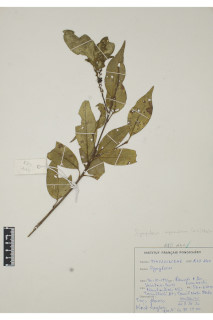
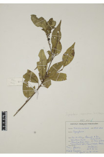
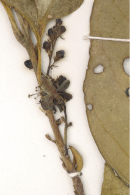
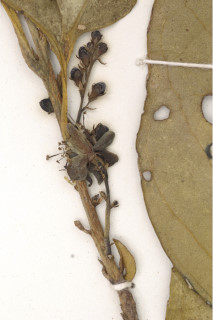

Small trees up to 7 m tall.
7 ಮೀ. ಎತ್ತರದವರೆಗಿನ ಸಣ್ಣ ಮರಗಳು.
Small trees up to 7 m tall.
சிறிய மரம் 7 மீ. உயரம் வரை வளரக்கூடியது.
Young branchlets subterete, hairy when young, later glabrous.
ಕಿರುಕೊಂಬೆಗಳು ಉಪದುಂಡಾಗಿದ್ದು, ಎಳೆಯದಾಗಿದ್ದಾಗ ರೋಮಸಹಿತವಿದ್ದು ನಂತರ ರೋಮರಹಿತವಾಗಿರುತ್ತವೆ.
Young branchlets subterete, hairy when young, later glabrous.
சிறியநுனிக்கிளைகள் குறுக்குவெட்டுத் தோற்றத்தில் வளையமானது, இளம்பருவத்தில் உரோமங்களுடையது, முதிரும் போது உரோமங்களற்றது.
Leaves simple, alternate, spiral; petiole up to 0.5-1.4 cm long, planoconvex in cross section, glabrous when mature; lamina 4.5-10 x 2-3.5 cm, ovate- elliptic, apex caudate - acuminate with mucronate tip, base attenuate - decurrent, margin serrate and recurved, glabrous when mature, greenish when dry; midrib canaliculate above; secondary_nerves ca. 5 pairs; tertiary_nerves obscure or broadly reticulate.
ಎಲೆಗಳು ಸರಳವಾಗಿದ್ದು ಪರ್ಯಾಯ ಮತ್ತು ಸುತ್ತು ಜೋಡನಾ ವ್ಯವಸ್ಥೆಯಲ್ಲಿರುತ್ತವೆ; ತೊಟ್ಟುಗಳು 0.5 – 1.4 ಸೆಂ.ಮೀ.ವರೆಗಿನ ಉದ್ದವಿದ್ದು,ಅಡ್ಡ ಸೀಳಿದಾಗ ಸಪಾಟ ಪೀನ ಮಧ್ಯದ ಆಕಾರದಲ್ಲಿದ್ದು, ಬಲಿತಾಗ ರೋಮರಹಿತವಾಗಿರುತ್ತವೆ; ಪತ್ರಗಳು 4.5 – 10 X 2– 3.5 ಸೆಂ.ಮೀ. ಗಾತ್ರ,ಅಂಡ -ಅಂಡವೃತ್ತದ ಆಕಾರ ಹೊಂದಿದ್ದು,ಅಗ್ರದಲ್ಲಿ ಮೊನಚು ಮುಳ್ಳನ್ನೊಳಗೊಂಡ ಬಾಲರೂಪಿ - ಕ್ರಮೇಣ ಚೂಪಾಗುವ ತುದಿ, ಒಳಬಾಗಿದ – ತಳಭಾಗಕ್ಕೆ ವಿಸ್ತರಿಸಿದ ಮಾದರಿಯ ಬುಡ ಹೊಂದಿದ್ದು,ಗರಗಸ ದಂತಿತವಾದ ಮತ್ತು ಹಿಂಸುರುಳಿಗೊಂಡ ಅಂಚು ಹೊಂದಿದ್ದುಬಲಿತಾಗ ರೋಮರಹಿತವಾಗಿರುತ್ತವೆ,ಒಣಗಿದಾಗ ಹಸಿರು ಛಾಯೆ ಹೊಂದಿರುತ್ತವೆ;ಮಧ್ಯನಾಳ ಪತ್ರದ ಮೇಲ್ಭಾಗದಲ್ಲಿ ಕಾಲುವೆಗೆರೆ ಸಮೇತವಿರುತ್ತದೆ;ಎರಡನೇ ದರ್ಜೆಯ ನಾಳಗಳು ಅಂದಾಜು 5 ಜೋಡಿಗಳಿರುತ್ತವೆ; ಮೂರನೇ ದರ್ಜೆಯ ನಾಳಗಳು ಅಸ್ಪಷ್ಟವಾಗಿರುತ್ತವೆ ಅಥವಾ ವಿಶಾಲ ಜಾಲಬಂಧ ನಾಳ ವಿನ್ಯಾಸದಲ್ಲಿರುತ್ತವೆ.
Leaves simple, alternate, spiral; petiole up to 0.5-1.4 cm long, planoconvex in cross section, glabrous when mature; lamina 4.5-10 x 2-3.5 cm, ovate- elliptic, apex caudate - acuminate with mucronate tip, base attenuate - decurrent, margin serrate and recurved, glabrous when mature, greenish when dry; midrib canaliculate above; secondary_nerves ca. 5 pairs; tertiary_nerves obscure or broadly reticulate.
இலைகள் தனித்தவை, மாற்றுஅடுக்கமானவை, சுழல் போன்று அமைந்தவை; இலைக்காம்பு 0.5-1.4 செ.மீ. நீளமானது, குறுக்குவெட்டுத் தோற்றத்தில் பிளேனோகான்வக்ஸ், முதிரும் போது உரோமங்களற்றது; இலை அலகு 4.5-10 x 2-3.5 செ.மீ., முட்டை-நீள்வட்ட வடிவானது, அலகின் நுனி வால்-அதிக்கூரியதுடன் அதன் முனை மூயூக்கரனேட், அலகின் தளம் அட்டனுவேட்-டெக்கரண்ட், அலகின் விளிம்பு ரம்ப பற்களுடையது மற்றும் பின்புறம் வளைந்து காணப்படும், முதிரும் போது உரோமங்களற்றது, உலரும் போது பச்சை நிறமானது; மையநரம்பு மேற்புறத்தில் அலகின் பரப்பைவிட பள்ளமானது; இரண்டாம் நிலை நரம்புகள் 5 ஜோடிகள்; மூன்றாம் நிலை நரம்புகள் மற்றும் பிற நரம்புகள் கண்களுக்கு புலப்படாது அல்லது அகன்ற வலைப்பின்னல் போன்றவை.
Inflorescence axillary racemes, up to 14 cm long, tomentose; pedicel ca. 0.5 cm long.
ಪುಷ್ಪಮಂಜರಿ ಅಕ್ಷಾಕಂಕುಳಿನಲ್ಲಿನ ಮಧ್ಯಾಭಿಸರ ಮಾದರಿಯವುಗಳಾಗಿದ್ದು, 14 ಸೆಂ.ಮೀ. ವರೆಗಿನ ಉದ್ದವಿರುತ್ತವೆ,ದಟ್ಟ ಮೃದುತುಪ್ಪಳದಿಂದ ಕೂಡಿರುತ್ತವೆ;ಹೂ ತೊಟ್ಟುಗಳು ಅಂದಾಜು 0.5 ಸೆಂ.ಮೀ.ಉದ್ದವಿರುತ್ತವೆ.
Inflorescence axillary racemes, up to 14 cm long, tomentose; pedicel ca. 0.5 cm long.
மஞ்சரி இலைக்கோணங்களில் காணப்படுபவை, ரெசீம் வகை, 14 செ.மீ. நீளமானது, உரோமங்களுடையது; மலர்காம்பு 0.5 செ.மீ. நீளமானது.
Drupe, ellipsoid or oblong, ca. 1.2 cm long; seeds 1-2.
ಡ್ರೂಪ್ಗಳು ಅಂಡವೃತ್ತ ಅಥವಾ ಚತುರಸ್ರಾಕಾರದಲ್ಲಿದ್ದು ಅಂದಾಜು1.2 ಸೆಂ.ಮೀ. ಉದ್ದವಿರುತ್ತವೆ;ಬೀಜಗಳ ಸಂಖ್ಯೆ 1 ರಿಂದ 2.
Drupe, ellipsoid or oblong, ca. 1.2 cm long; seeds 1-2.
உள்ளோட்டுத்தசைகனி (ட்ரூப்), நீள்வட்ட அல்லது நீள்சதுர வடிவானது, 1.2 செ.மீ. நீளமானது; விதைகள் 1-2.
 


 
